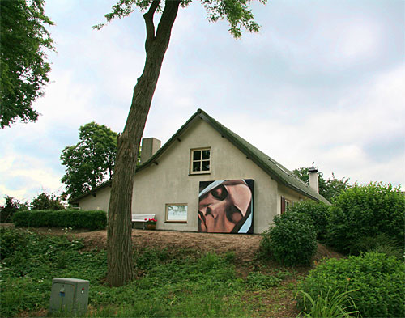
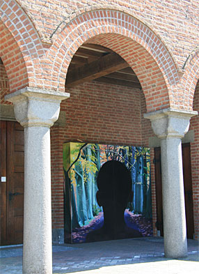
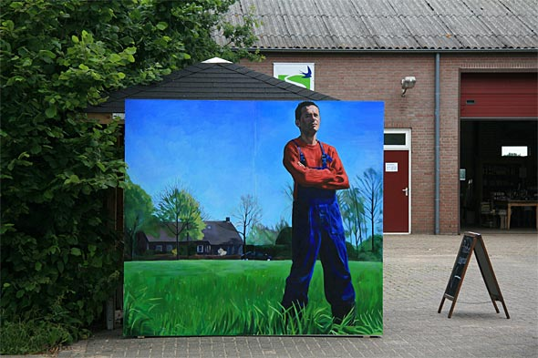

Reistijd
Participatieproject in het kader van kunstproject "Elders" in Sint-Michielsgestel (N-Brabant).
Was vroeger een bedevaartstocht een ongelofelijke reisbelevenis, tegenwoordig worden afstand, tijd en plaats anders ervaren. Niet alleen is door de ontwikkeling van het toerisme het leefgebied uitgebreid, ook komen "nieuwkomers van elders" de regio binnen. De persoonlijke reisgeschiedenissen van Poolse seizoenarbeiders, bedevaartgangers en vluchtelingen spelen in Reistijd de hoofdrol.
De film bevat foto's, stills en de voice over van een film van pastoor van Beurden over Lourdes, geluidsfragmenten, muziek en interviews en vormt het documentairedeel van het project. Vervolgens ziet u de werken op de locaties.
"De verschijning van de heilige Bernadette in Den Dungen"

Acrylverf op hout 220 cm x 240cm x 30cm 2010
Pastoor van Beurden uit Den Dungen gaat regelmatig op bedevaart. Meneer pastoor laat mij de film zien die hij van de reis Den Dungen- Lourdes in 2009 heeft gemaakt. Hij vertelt me het verhaal van de Heilige Bernadette die Maria zag verschijnen in Lourdes, over hoe hij de mis heeft opgedragen op de locatie, laat hij de lichtprocessie zien die jaar in jaar uit iedere dag wordt gehouden. De pastoor vertelt me over mevrouw Sterkx in Den Dungen die 25 keer in Lourdes is geweest. Gastvrij wordt ik door haar en haar kinderen ontvangen. Ze vertelt over haar wonderbaarlijke genezing van een leverontsteking tijdens haar eerste bezoek aan Lourdes. Uit dankbaarheid belooft ze de heilige Bernadette 25 keer terug te keren.
"Jongen uit Siërra Leone in Middelrode"

Acrylverf op hout 220 cm x 240cm x 30cm 2010
De reis van de jongen uit Siërra Leone is een gedwongen reis. Deze gaat gepaard met traumatische herinneringen en gebeurtenissen. Via zijn verhalen reis ik van Sint-Michielsgestel naar Afrika en weer terug. Zijn verhaal is exemplarisch voor de ellende die zich in dat land heeft afgespeeld. De vreselijke geschiedenis van dat land staat in contrast met een prachtige natuur met witte stranden en groene wouden.
Het werk is geïnspireerd door het verhaal van een 10 jarige jongen die met zijn jongere zusje het bos in vluchtte op de nacht toen de rebellen hun dorp binnen vielen. Zijn moeder werd door de rebellen meegenomen, is na verloop van tijd gevlucht en door een Nederlander meegenomen om uiteindelijk in Sint-Michielsgestel een veilig heenkomen te vinden. Na jaren zijn ze herenigd.
"Poolse seizoenarbeider in Sint-Michielsgestel"

Acrylverf op hout 220 cm x 240cm x 30cm Achterzijde: behang, tafel met fotocollage en c.d. speler met interview. 2010.
De werkende mens in het landschap is een terugkerend thema in de schilderkunst. De mens één met de natuur. Met dat beeld in mijn hoofd ging ik op zoek naar de Poolse seizoenarbeider in Sint-Michielsgestel. Hoe is het om werk te moeten doen in den vreemde? Wie zijn ze? Op boerderij de Vennenhof waar veel Polen werkzaam zijn, worden aardbeien en asperges geteeld. Daar heb ik Marek ontmoet die model heeft gestaan voor het schilderij. De achterzijde van het schilderij is behangen. Er staat een tafel met fotocollage waar een interview met Peter van de Ven, eigenaar van de Vennenhof, te horen is, geluidsopnames van diverse ontmoetingen en Poolse muziek.